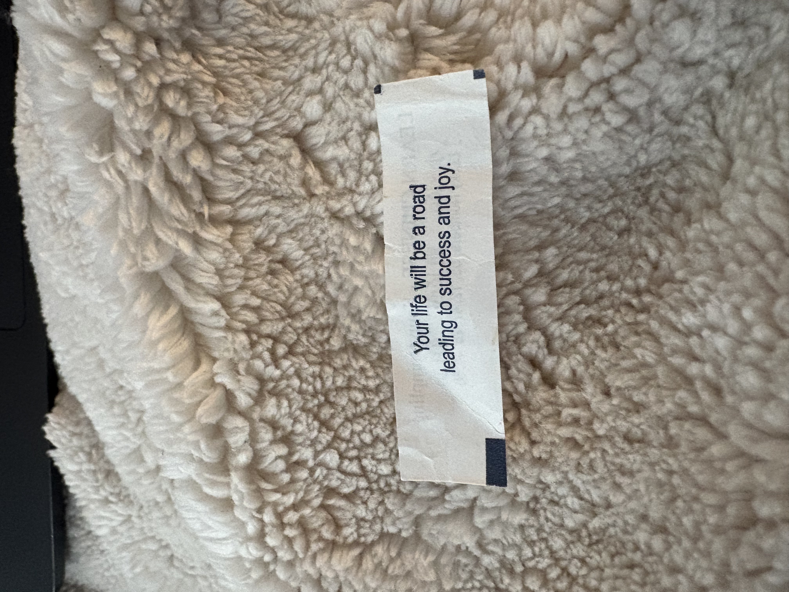
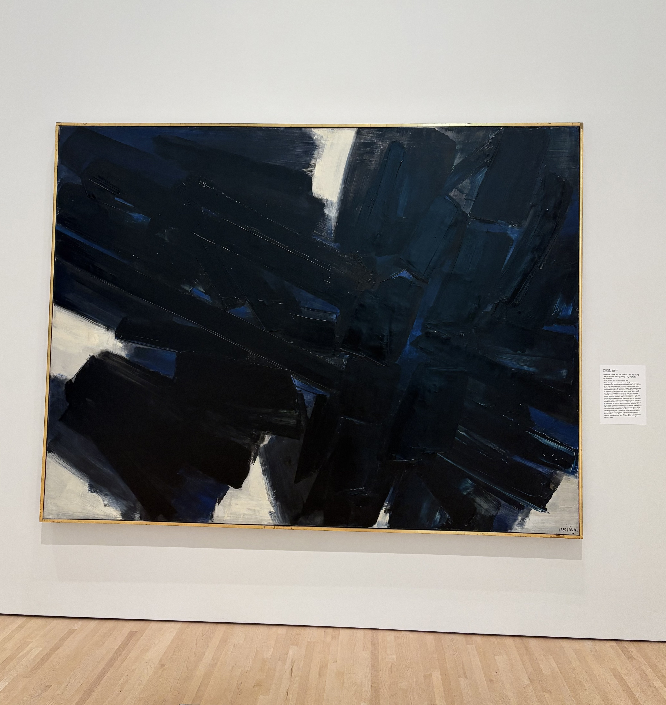
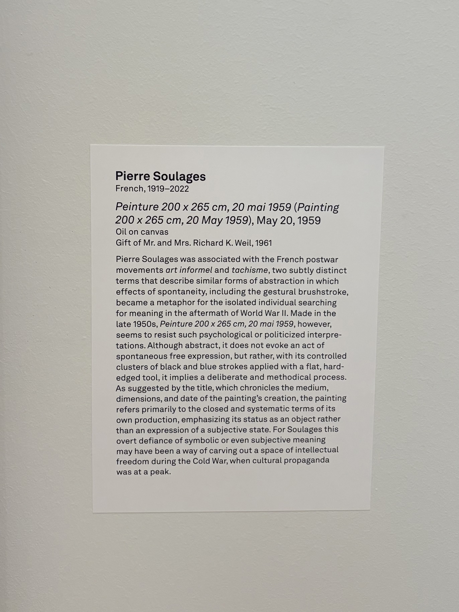

We were coming back from a long away game, and we stopped at a random Chinese restaurant to eat. I got this fortune cookie, and I was really touched by this simple message. I thought that it was a really nice reminder and motto for life, and it just came at a really good time for me.
AKA this font. It's just so clean and put together, it really brings a sense of calm and order to my work. I've used it for most of my projects so far, and I think that it is a really proper font to use for any kind of design work.
This song encapsulates the feeling of nostalgia perfectly for me. Even though I lived in Geneva my entire life, I grew up being exposed to Turkish culture and music thanks to my family, so Teoman was a prominent artist in my childhood. This song in particular was one that brings me back to my roots instantly.
This is another website that I cam across while looking for inspiration, and it might just be my favorite one that I've ever seen. I always come back to this to remind myself that I can always add more playfulness and creativity to my work without taking away the functionality or the effectiveness of it. It's just so good!
This font represents the splash of experimentation and creativity that I want to bring to any sort of design work that I do. I was really drawn to this font when I was designing the Barrio menu, and I think that it is a really fun and unique font that can be implemented in a lot of different ways.
This website captures the elegant and class that Ellipsus is clearly trying to portray as a brand. It does a really good job of shining a light on the products in a way that is both visually appealing and effective. I think that this is a really good example of a clean and simple design with intentional choices that lure the user in.
This book has been a real game-changer for me. It's a refreshing take on changing your mentality, and it really challenges the status quo. The author's approach to dealing with life's inevitable struggles is both practical and empowering, and has helped me to reframe my own perspective on challenges. It's a book that I find myself returning to for guidance, motivation, and inspiration.
It's simple, it's refreshing, it's aesthetically pleasing, and it does the job. This clean and quirky look is what I think about when I think about the kind of design work that I want to do. I think that this website is a really good example of how to create a simple and effective design that is both visually appealing and functional.
I came across this website while looking for inspiration for my own projects, and I've kept coming back to it constantly. Simply because it's simple yet so playful and effective, and really does a good job of showcasing her work and design style. I love that it's interactive but not to the point of being overwhelming.
Bitez is a small town in Bodrum, Turkey, and it might just be my favorite place in the world. It didn't used to be, but over the years I have grown to love and cherish it more and more. It just reminds me of my family and summertime, and it has a really special place in my heart.
This website has a unique/quirky and creative design that stands out to me. It's the type of design that I want to be able to create because it's so cohesive and such a good use of colors and fonts. It does a really good job of presenting the necessary amount of information in a minimalistic way.
This is a line from a Turkish song that I've heard a lot throughout my life, and it basically means "life will surprise you all the time!". I think that this is a really good reminder to not take life too seriously, and to be open to the unexpected.


This painting by Pierre Soulages is simple and has very few elements, yet Soulages utilizes the color palette and the brush strokes so well to tell a deep and dark story. I can't really explain it, but the general vibe of this painting speaks to me.
Some themes that came up consistently throughout my shimmering points are reflection and general outlook on life, while also being straight to the point and not doing too much. I think that puts into words what I was kind of going for with this collection, and it's a good representation of my personal outlook on life and the kind of things that inspire me.